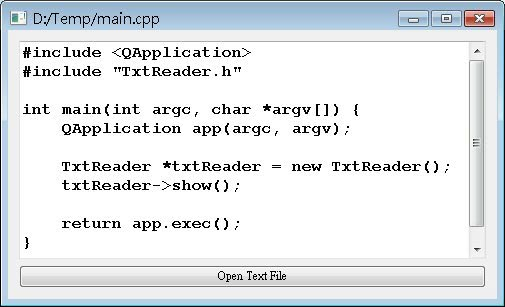

這 個程式基本上只是綜合了之前所介紹過的幾個元件，像是 QVBoxLayout、QPushButton、QFileDialog 等，以及QTextEdit元件來進行文字檔案的讀取與顯示，在Qt中並不只有圖形化的視窗元件，一些I/O、繪圖、網路等API在Qt也有提供，在這個例子中將會 使用到的是QFile與QTextStream，程式中簡單的使用這兩個類別，就可以達到開啟檔案讀取的動作。
首先編輯TxtReader.h：
- TxtReader.h
#ifndef TXT_READER_H
#define TXT_READER_H
#include <QWidget>
class QTextEdit;
class QPushButton;
class TxtReader : public QWidget {
Q_OBJECT
public:
TxtReader(QWidget *parent = 0);
protected:
QTextEdit *txtEdit;
QPushButton *openBtn;
protected slots:
void readTxtFile();
};
#endif在這個標頭檔中，定義了一個Slot，當按下按鈕時，將連接這個Slot來進行檔案讀取的動作，接下來編輯TxtReader.cpp：
- TxtReader.cpp
#include "TxtReader.h"
#include <QVBoxLayout>
#include <QTextEdit>
#include <QPushButton>
#include <QFont>
#include <QFileDialog>
#include <QFile>
#include <QTextStream>
TxtReader::TxtReader(QWidget *parent) : QWidget(parent) {
txtEdit = new QTextEdit;
txtEdit->setFont(QFont( "Courier", 12, QFont::Bold ));
openBtn = new QPushButton("Open Text File");
QVBoxLayout *layout = new QVBoxLayout;
layout->addWidget(txtEdit);
layout->addWidget(openBtn);
this->setLayout(layout);
this->resize(350, 200);
connect(openBtn, SIGNAL(clicked()),
this, SLOT(readTxtFile()));
}
void TxtReader::readTxtFile() {
QString fileName = QFileDialog::getOpenFileName(this, "Open Text File",
"C:\\", "Text Files (*.txt *.java *.c *.cpp);;All files (*.*)");
QFile file(fileName);
if(file.open(QIODevice::ReadOnly)) {
this->setWindowTitle(fileName);
QTextStream stream(&file);
txtEdit->setText(stream.readAll());
}
file.close();
}程式中配置QTextEdit與QPushButton，按下按鈕後clicked()的Signal會連接至自定義的 readTxtFile()，在這當中使用了QFileDialog供使用者選取檔案，而後使用傳回的檔案名稱來用QFile進行開檔，由於將讀取的是文 字檔案，使用QTextStream輔助，可以使用其readAll()方法一次讀進檔案中所有的文字，最後記得使用QFile的close()關閉檔 案。
QTextEdit類別可以用來編輯文字，基本上不限於純文字的編輯，還可以編輯字型、顏色等；setText()指定QTextEdit的顯示文字內容。
接下來編輯主程式：
- main.cpp
#include <QApplication>
#include "TxtReader.h"
int main(int argc, char *argv[]) {
QApplication app(argc, argv);
TxtReader *txtReader = new TxtReader;
txtReader->show();
return app.exec();
}下圖為執行時的參考畫面：
